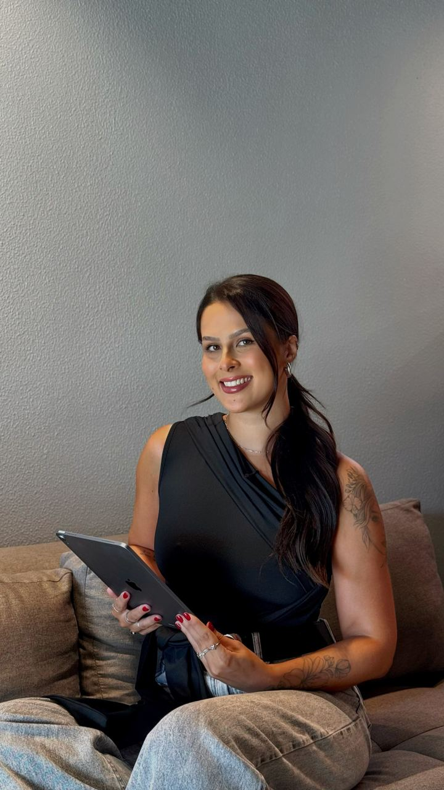

Sobre
Dra. Milena Vargas.
Biomédica esteta · CRBM 5 – 9505
A Dra. Milena Vargas é biomédica esteta e atende em Erechim (RS) e Florianópolis (SC). Seu trabalho é conhecido pela naturalidade: realçar, sem transformar.
[Formação, especializações e anos de experiência: texto a preencher com a Dra. Milena.]
Cada atendimento começa por uma avaliação do rosto inteiro. Só depois vem o plano, com o que faz sentido para você, em que ordem e com o investimento de cada etapa.
Mais do que aumentar, o objetivo é equilibrar.
Naturalidade.
O resultado respeita os seus traços. Ninguém precisa perceber o procedimento, só você mais descansada.
Técnica.
Planejamento de pontos e quantidades, produtos registrados e acompanhamento depois do procedimento.
Planejamento.
Cada rosto pede um plano. A ordem certa evita excesso e economiza produto.
Cada rosto pede um plano. Agende sua avaliação e entenda o que faz sentido para você.
Clique aqui e agende sua avaliação!